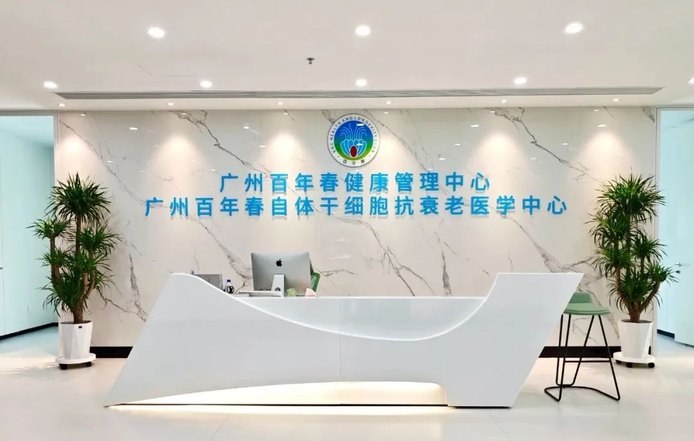
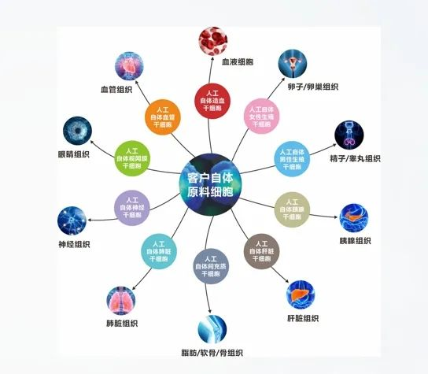
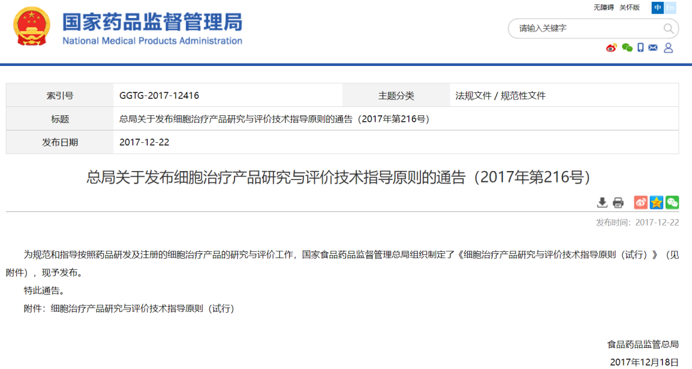
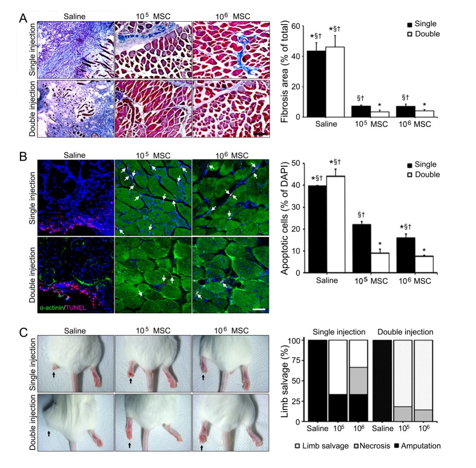
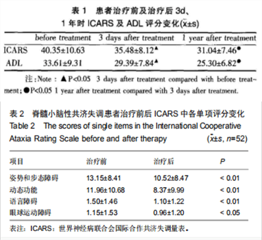

年后肝"负重"？百年春护肝美颜能量抗衰老针——给肝"松绑"，让脸发光！
2026-03-01

About Us
关于百年春

百年春是一家在生命健康领域具有广泛影响力的产业集团，以自体干细胞领域创新为核心发展，20多年来一直从事自体干细胞的研发、应用以及推广服务，在抗衰老、再生医学、自体干细胞储存等生物领域拥有世界领先技术。百年春是自体干细胞的首创者和坚持者。
百年春核心技术：通过抽取客户80-120ml外周血，提取里面白细胞用小分子诱导可逆转10余中自体干细胞。
百年春自体干细胞的优点
1.来源于自己本身，不存在免疫排斥问题
2.一代逆转，不进行扩增，不存在细胞老化问题
3.一次性回输细胞数量达2-4亿，数亿干细胞治疗效果更佳
4.实现私人定制回输方案，且自体干细胞种类多给客户更多选择

言归正传我们来聊聊，干细胞为什么需要多次使用，但是又不用担心身体会产生依赖。
目前细胞治疗多数还是处在临床研究阶段，很多问题没有标准的答案，但是通过公开的临床研究数据，我们可以总结出一些规律。同时，细胞治疗是一个高度个性化的方式，并没有一个“放之四海而皆准”的答案，需要具体情况具体对待。问题总有千千万万，只有掌握了最基础的底层规律，才可以“以不变应万变”。
首先，来介绍三个基础的概念：
01
什么是干细胞？
干细胞通常来源于外周血、骨髓、脐带、脂肪等组织，根据掌握的技术程度，可以培育成全能干细胞或者多能干细胞的一种，也是被临床研究的最多的细胞。
它具有强大的自我复制能力和分化潜能，对身体受损的器官组织进行全身性的修复。被广泛应用于血液系统、神经系统、免疫系统、生殖系统等200多种疾病
02
什么是细胞治疗？

根据国家2017年公布的《细胞治疗产品研究与评价技术指导原则》定义：细胞治疗是指应用外源性或内源性活细胞来治疗或预防疾病的治疗方法。这些细胞可以来自自体或异体，经过分离、培养、扩增等技术处理后注射或移植到患者体内，以发挥其治疗作用。与传统治疗方法相比，细胞治疗具有更为精准的作用机制、更好的组织特异性和更低的不良反应率。同时，细胞治疗能够帮助患者从根本上治愈疾病，而不仅是缓解症状。
细胞治疗与传统的治疗方式是完全不同的两种治疗思路，细胞治疗的重点是“从根本上改善”也就是说，用和我们身体同源的“好”细胞去改善“不好”的，而传统的治疗方式更像是“维持和控制”，例如，吃药的目的是辅助性的缓解病痛，从而为身体自愈赢得时间，恢复功能。所以，只有在深刻理解“细胞治疗”的底层逻辑后，我们才能了解更加复杂的问题。
03
什么是药物依赖？
药物的依赖性主要与其在中枢神经系统中产生的作用有关。药物通过与神经元之间的化学信号传递途径发生相互作用，从而影响神经元的活动，导致各种生理和心理效应。当药物长期或大量使用时，会改变神经递质的含量和分布，改变神经元的连接方式，导致神经递质系统的失衡，从而形成对药物的依赖。
04 为什么干细胞需要多次使用，且不用担心药物依赖？
首先，干细胞的使用剂量和次数，目前为止，还没有统一的共识。但是，在大量公开的临床研究结果中，我们可以总结出一些值得参考的规律：
剂量方面
通常与回输的途径密切相关，静脉回输和靶向回输自体干细胞定点修复效果不同。目前百年春自体干细胞，经过二十余年的临床研究，得出自体干细胞疗效最好的剂量。通常一针数量通常为2-4亿不等。同时，具体问题具体分析。
次数方面
先抛开科学，想象一个基本的常识，我们的身体随着年纪的增长，是不是每天都在衰老？为什么？因为每天都有旧的细胞在衰老和凋亡，又会有新的细胞诞生和成长。同样，干细胞也是细胞，也会衰老和凋亡。
回到科学，大量临床研究显示，干细胞的治疗效果通常是通过多次给药来实现的。这是因为，干细胞在体内具有一定的生存期限和迁移能力，如果是异体细胞可能受到宿主免疫系统的攻击和排斥，但是如果像百年春自体定制的自体干细胞则不会出现排斥反应。因此，多次给药可以增加治疗效果和维持细胞数量，从而提高治疗成功的概率。
另外，干细胞的治疗效果也受到细胞来源和品质的影响。在不同来源和品质的干细胞中，可能存在差异化和功能失调等问题，导致治疗效果不同。因此，在多次给药的过程中，需要选择品质高、来源可靠的干细胞，以确保治疗效果的稳定性和可靠性，而百年春的自体干细胞无疑是最好的选择。
最后，不同的途径和方法中，可能存在吸收不足、分布不均等问题，导致治疗效果下降。
综上所述，干细胞的多次给药是为了增加治疗效果和维持细胞数量，而且选择品质高、来源可靠的自体干细胞，并采用适合的途径和方法，可以极大提高治疗效果和可靠性。
05干细胞会不会造成依赖性，或者说停止后身体会不会有影响呢？
答案是：如果是纯净的干细胞，并且来源可靠，严格执行生产和质量检测标准，不会造成身体的依赖性和毒副作用。
2016年韩国发表的动物实验，研究发现骨髓干细胞可以治疗严重肢体缺血（Critical limb ischemia，CLI），这类靶向干细胞在体内存活约4周，提高剂量并不能有效增加效果，但多次注射靶向干细胞可以提高疗效。

该研究结果表明，干细胞以旁分泌的方式保护缺血性损伤，并表明在治疗CLI时，增加注射频率更重要。
还记得在文章开始的第三个关于药物依赖性的基础概念吗？
第一，干细胞的特殊来源和生物学特性就决定了不会产生依赖。干细胞本身就来源于人体成体组织中，是身体里本身就有的物质。
第二，大量临床研究表明，干细胞在体内不具有自主分化的能力，必须在特定条件下诱导分化成为其他细胞类型，因此不会像某些药物一样产生依赖性。
第三，干细胞与其他药物治疗机制有很大不同。因为，许多药物的作用机制是通过改变人体内某些特定的生物分子或化学物质来产生治疗效果。这些药物可能会与身体内的特定细胞或分子产生互动，从而导致药物依赖的现象。相反，干细胞的治疗机制是通过分化、调节、旁分泌来实现的治疗作用的。
最后，赛尔生物历经二十余年的发展，拥有大量的临床宝贵数据，许多临床研究表明，赛尔的类胚胎技术干细胞并不会在长期使用后导致产生耐药性或毒副作用。这些研究表明，干细胞治疗不仅安全，而且具有持久的治疗效果。
例如，这篇文献报告了一项针对遗传性小脑性共济失调（hereditary spinocerebellar ataxia）的临床试验，探讨了干细胞治疗的安全性和疗效。

结果显示，细胞治疗组的临床症状评估和小脑功能评估得分均显著优于安慰剂组，并且干细胞治疗在所有患者中均未出现明显的不良反应和安全问题。这表明干细胞治疗可能是一种安全有效的遗传性小脑性共济失调治疗方法。
06 总结
就目前百年春与全球的临床研究数据显示，只有自体干细胞是一种比较安全和有效的新型治疗方式，没有任何的不良反应。但是，也是一种极具个性化的治疗方式，和传统的药物治疗方式有巨大差异。所以，对于临床研究和应用来说，需要更多的时间和智慧去探索和掌握规律。不过，我们完全有理由相信“科学研究的进程就像攀登高山，虽然艰辛曲折，但登上高峰之后，风景是无与伦比的。”